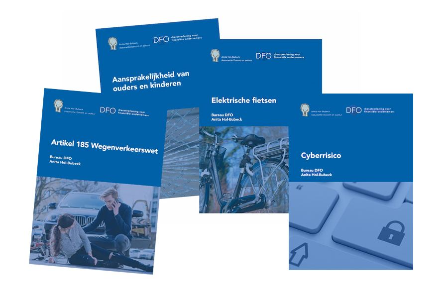

Bureau DFO Vaknotities
In samenwerking met top docente schadeverzekeringen Anita Hol-Bubeck brengt Bureau DFO vak notities uit over diverse schadeonderwerpen waar adviseurs in zowel de adviespraktijk als bij de schadebehandeling mee te maken hebben. De vak notities kunnen dienen als hulpmiddel om nieuwe medewerkers in te werken op het gebied van advies en schadebehandeling. Maar voor de meer ervaren adviseurs en medewerkers zijn het ook handige naslagwerken!
Artikelnummer vaknotitie. Bestellen en betalen gaat via de webshop op dfobv.nl.
Omschrijving
In samenwerking met top docente schadeverzekeringen Anita Hol-Bubeck brengt Bureau DFO vak notities uit over diverse schadeonderwerpen waar adviseurs in zowel de adviespraktijk als bij de schadebehandeling mee te maken hebben. De vak notities kunnen dienen als hulpmiddel om nieuwe medewerkers in te werken op het gebied van advies en schadebehandeling. Maar voor de meer ervaren adviseurs en medewerkers zijn het ook handige naslagwerken!
In iedere vaknotitie wordt de theorie achter één specifiek onderwerp behandeld aan de hand van de in de dagelijkse advies- en schadebehandelingspraktijk bij een advieskantoor voorkomende situaties.
De volgende notities zijn beschikbaar:
Elektrische fietsen
Het gebruik van de diverse soorten elektrische fietsen in Nederland neemt enorm toe. Het aantal fietsen neemt toe, maar er zijn ook steeds meer verschillende soorten fietsen. In de vaknotitie komt aan de hand van voorbeelden onder andere aan de orde:
- Welke soorten elektrische fietsen zijn er?
- Wat is er in de diverse wetgeving (WVW en de WAM) over deze fietsen opgenomen? Zijn de fietsen motorrijtuigen of ‘zwakkere verkeersdeelnemers’? Welke verplichtingen zijn er rondom het bezit, gebruik en verzekeren van deze fietsen?
- Zijn de risico’s rondom het bezit en het gebruik van elektrische fietsen meeverzekerd op bestaande bezits- en aansprakelijkheidsverzekeringen? Welke mogelijkheden zijn er eventueel om de niet verzekerde risico’s dan wél te verzekeren?
Aansprakelijkheid van Ouders en kinderen
Voor ieder advieskantoor geldt, dat er regelmatig vragen worden gesteld over schades die veroorzaakt (kunnen) worden door kinderen. Schades die jonge kinderen veroorzaken, kinderen ouder dan 14 jaar, eigen kinderen die al dan niet bij de ex-partner woont of kinderen van een inwonende partner, stief- en adoptiekinderen. Zijn de ouders altijd aansprakelijk? Is de aansprakelijkheid van de ouders en/of de kinderen meeverzekerd in de aansprakelijkheidsverzekering voor particulieren (AVP) van de ouders?
De antwoorden op al deze vragen worden uitgewerkt aan de hand van voorbeelden uit de dagelijkse advies- en schaderegelingspraktijk bij advieskantoren!
Cyberrisico
In de uitgebreide notitie cyberrisico is op overzichtelijke wijze informatie opgenomen die voor de advies- en schaderegelingspraktijk relevant is. Aan de hand van voorbeelden van cyberincidenten wordt inzicht gegeven in de risico’s voor gebruikers van computers en andere geautomatiseerde systemen en in hoeverre de risico’s te verzekeren zijn.
Aan bod komen ook de gevolgen van een cyberincident:
- Welke bestaande en nieuwe wetgeving van toepassing is;
- Wat kan worden gedaan om meer schade te voorkomen;
- Wat een bedrijf of organisatie verplicht is om te doen;
- Welke schade kan ontstaan: schade aan het eigen bedrijf, schade aan derden en diverse kosten die gemaakt moeten worden.
Art. 185 WVW de Nachtmerrie van de automobilist
Dagelijks ontstaan in het verkeer ongevallen; vaak ongevallen waarbij een motorrijtuig betrokken is en iets anders dan een motorrijtuig, zoals bijvoorbeeld een fietser of een voetganger. Daardoor krijgen advieskantoren ook regelmatig te maken met deze schade waarop art. 185 WVW van toepassing is. Aan de hand van veel praktijkvoorbeelden wordt uitgelegd:
- Wat er in art. 185 WVW is opgenomen en op welke wijze dat in de praktijk moet worden toegepast;
- Wat er in jurisprudentie uitgewerkt is over bijvoorbeeld de reflexwerking, de 50% en de 100% regel, de causale verdeling, de redelijkheid en billijkheid en hoe daar in de praktijk mee omgegaan wordt;
- Op welke wijze deze schades door WAM en AVP verzekeraars in de praktijk afgewikkeld worden en wat de gevolgen zijn voor de no-claimkorting.
Reader Verkeersrecht – voor de Schadebehandelaar
De Reader Verkeersrecht is een in januari 2024 geactualiseerd naslagwerk van ruim 70 pagina’s speciaal ontwikkeld voor Schadebehandelaars die zich bezighouden met het behandelen van schades in het verkeer. De reader is in samenwerking met Bureau DFO ontwikkeld door Miranda van Eekelen-Atema en Anita Hol-Bubeck.
In de DFO Reader Verkeersrecht worden meest voorkomende verkeerssituaties en de daaruit voorvloeiende schades behandeld.
Verzekeringstechnische risicoanalyse particuliere relatie
In het civiel recht en bij het KiFiD groeit de hoeveelheid jurisprudentie naar aanleiding van claims van consumenten over fouten of tekortkomingen van hun verzekeringsadviseur. Niet zelden wordt een claim toegewezen omdat een adviseur niet kan aantonen dat hij bepaalde handelingen heeft verricht of dat bepaalde zaken met de klant zijn besproken.
Om de schadeadviseur te helpen om beter vast te leggen welke handelingen hij heeft verricht en wat er met de klant is besproken heeft Bureau DFO het document ‘Verzekeringstechnische risicoanalyse particulieren’ beschikbaar.
Passende opleidingen, masterclasses en documenten
Opleidingen van Bureau DFO
Praktijkgerichte trainingen, webinars en leergangen.
WebinarWebinar Aansprakelijkheid voor schade veroorzaakt door kinderen
Data en locaties: zie het opleidingsportaal
Workshop particuliere aansprakelijkheid/aansprakelijkheidsverzekering
Data en locaties: zie het opleidingsportaal
Webinar Actualiteiten Schade Zakelijk
Data en locaties: zie het opleidingsportaal
Documenten & modellen
Direct toepasbaar in je praktijk, te bestellen in de webshop.
Naslagwerk